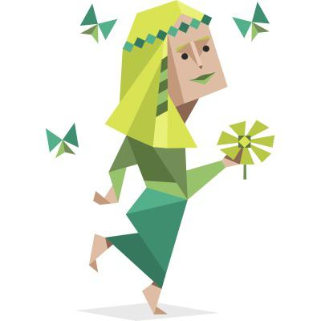

01
스포츠 보기
경기 시작 전 라인업부터 경기 후 하이라이트까지. 보는 시간도 제겐 꽤 진지한 취미예요.
TMI · 응원할 때만큼은 누구보다 과몰입안녕하세요
작은 호기심도 그냥 지나치지 않고,
천천히 제 것으로 만들어가고 있어요.
2000.07.28
스무 번째 여름의 한가운데에서 태어났어요. 뜨거운 계절처럼, 좋아하는 일 앞에서는 열정이 먼저 앞섭니다.
MY PLACES
본가는 인천에 있어요. 지금은 관악구에서 새로운 사람과 경험을 만나며 저만의 생활 반경을 넓히고 있습니다.

INFP · MEDIATOR
사람과 의미를 오래 들여다보는 편이에요. 진심이 닿는 일을 발견하면 제 속도대로 깊이 몰입합니다.
OFF THE CLOCK
01
경기 시작 전 라인업부터 경기 후 하이라이트까지. 보는 시간도 제겐 꽤 진지한 취미예요.
TMI · 응원할 때만큼은 누구보다 과몰입02
복잡한 생각은 발끝에 두고 달려요. 한 걸음씩 쌓이는 기록에서 작은 성취를 느낍니다.
TMI · 뛰고 나서 보는 기록이 제일 뿌듯함03
규칙을 이해하고 전략을 바꿔가며 해결하는 과정이 좋아요. 친구와 함께라면 재미는 두 배가 됩니다.
TMI · “한 판만”이 가장 지키기 어려운 약속